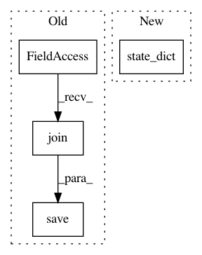

c12f538d2d496f5e8f932abc1ee72a586b9ea855,fonduer/learning/disc_learning.py,TFNoiseAwareModel,save,#TFNoiseAwareModel#Any#Any#Any#Any#,330
Before Change
dump(self.model_kwargs, f)
// Save graph and report if verbose
saver.save(
self.session, os.path.join(model_dir, model_name), global_step=global_step
)
if verbose:
self.logger.info("[{0}] Model saved as <{1}>".format(self.name, model_name))
def load(self, model_name=None, save_dir="checkpoints", verbose=True):
After Change
os.makedirs(model_dir)
params = {
"model": self.state_dict(),
"cardinality": self.cardinality,
"name": model_name,
"config": self.model_kwargs,
In pattern: SUPERPATTERN
Frequency: 3
Non-data size: 4
Instances
Project Name: HazyResearch/fonduer
Commit Name: c12f538d2d496f5e8f932abc1ee72a586b9ea855
Time: 2018-08-14
Author: senwu@cs.stanford.edu
File Name: fonduer/learning/disc_learning.py
Class Name: TFNoiseAwareModel
Method Name: save
Project Name: snorkel-team/snorkel
Commit Name: b56a4b355dfc302fa449d223e065af3a7acac986
Time: 2018-05-03
Author: dnicholson329@gmail.com
File Name: snorkel/learning/pytorch/noise_aware_model.py
Class Name: TorchNoiseAwareModel
Method Name: save
Project Name: ray-project/ray
Commit Name: 86cff17e7ef1b355e1ab4862ccd664ed4c856227
Time: 2020-03-30
Author: rliaw@berkeley.edu
File Name: python/ray/util/sgd/tests/test_torch.py
Class Name:
Method Name: test_multi_model